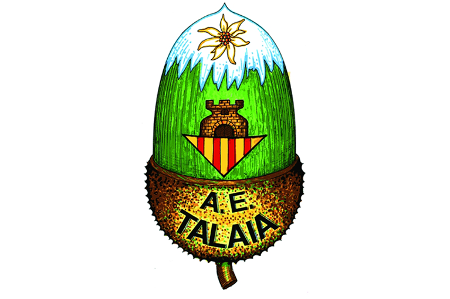
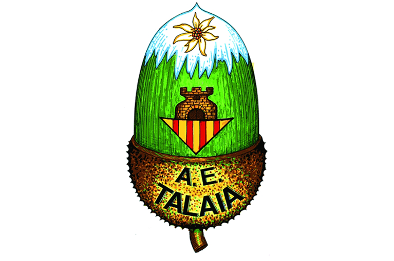

El projecte Garraf
En plena crisis climàtica i després de patir un incendi a la nostre comarca del Garraf, neix amb urgència el Projecte Garraf al 2022.
Aquest projecte té com a principal objectiu incentivar a les persones, grans i petites, a dur a terme diferents accions de protecció i restauració del nostre entorn més proper, en aquest cas amb una
acció inicial a la comarca Garraf, que engloba els entorns dels Colls Mirapleix, el Parc natural del Garraf, les platges, pic de lÀliga, Montgrós, l’Ortoll, Puigmoltó, etc.
La intenció és implicar als diferents Clubs esportius de la comarca, per tal de poder fomentar aquestes accions sense oblidar la nostre passió esportiva, sigui caminant, corrents o amb bicicleta.
El plantejament es fa així per tal de donar un punt motivador a la petita manca de responsabilitat personal que tenim com a col·lectiu envers a la cura i protecció del medi ambient.
Projecte Garraf és una iniciativa altruista d’uns pocs amics aficionats al trail i esports de muntanya, que pretén nodrir-se del gran teixit associatiu que tenim en aquesta bonica comarca per tal de capgirar la situació entre tots i totes.
 
